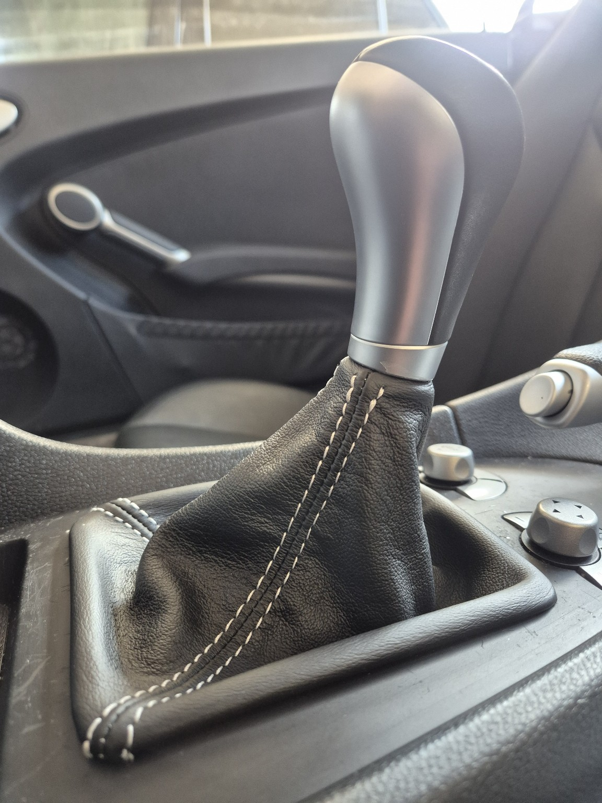
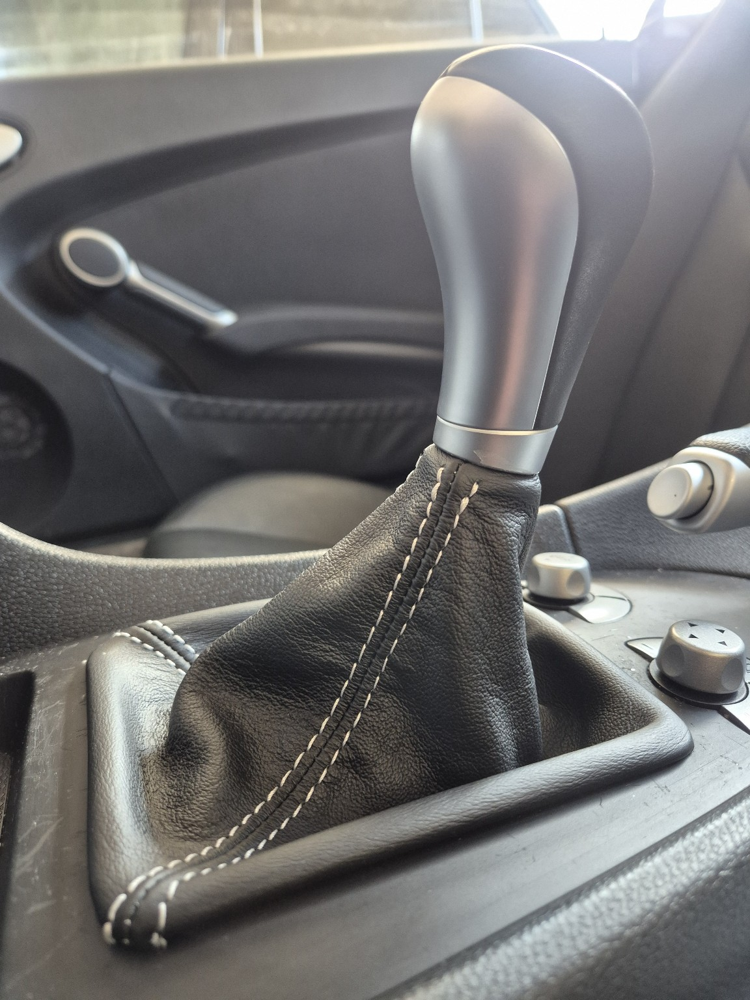

Wartung: Zündkerzen, Luftfilter, Innenraumfilter und Wischerblätter erneuert
Juni 2024
Nach der Übernahme des Wagens wurde im Rahmen einer Wartung folgende Komponenten gewechselt:
- Vier Zündkerzen (für M271-Kompressormotor)
- Motor-Luftfilter
- Innenraumfilter (Pollenfilter / Aktivkohle)
- Scheibenwischerblätter (vorne)
Einbau in Eigenregie
Ergebnis: Verbesserte Motorleistung, saubere Kabinenluft und klare Sicht bei Regen.
Neuer Reifensatz montiert: Michelin Primacy 4
Juni 2024
Zur Vorbereitung auf die kommende Saison und für bestmögliche Fahrstabilität wurde ein neuer Satz Michelin Primacy-Reifen montiert. Die Wahl fiel bewusst auf diesen Reifen aufgrund seines ausgewogenen Verhaltens bei Nässe, Komfort und Langlebigkeit.
Einbau durch Werkstatt
Ergebnis: Spürbar ruhigeres Abrollen, präziseres Lenkgefühl und optimierte Sicherheit bei trockener wie nasser Fahrbahn.
Ölstoppkabel für Nockenwellenversteller
Juli 2024
Vorsorglich wurde zwei Ölstoppkabel für den Anschluss der Nockenwellenversteller nachgerüstet. Hintergrund: Beim M271-Motor kann Motoröl über die Kabel zum Motorsteuergerät wandern und dieses im schlimmsten Fall beschädigen.
Einbau in Eigenregie
In den Anschlussteckern der Nockenwellenversteller befand sich kein Öl. Sicher ist Sicher.
Teleskopdämpfer für Kofferraumdeckel ersetzt
August 2024
Die originalen Gasdruckdämpfer des Kofferraumdeckels waren nach 16 Jahren spürbar schwach und konnten das Gewicht nicht mehr sicher halten. Sie wurden gegen neue Teleskopdämpfer ersetzt, passend für den SLK R171.
Einbau in Eigenregie
Ergebnis: Der Deckel öffnet sich nun gleichmäßig und bleibt zuverlässig oben – kein Einklemmen, kein Rutschen, einfach originaler Komfort zurückgewonnen.
Pickerl (§57a), Öl- und Bremsflüssigkeitswechsel
September 2024
Im Rahmen der jährlichen Überprüfung nach §57a („Pickerl“) wurde der SLK in der Werkstatt gründlich durchgecheckt. Ergänzend dazu erfolgten wichtige Wartungspunkte:
- Wechsel des Motoröls inkl. Filter
- Erneuerung der Bremsflüssigkeit
- Motor Systemreiniger Benzin Additiv von Liqui Moly
- Klimaanlage befüllt
Flüssigkeitswechsel durch die Werkstatt
Ergebnis: Bestehende Plakette ohne Mängel, frisches Öl im Kreislauf und optimale Bremsleistung für die kommende Saison.
Ein Dachmodul von XCarstyle
März 2025
Nachrüstung eines Dachkomfortmoduls von xcarstyle, passend für den SLK R171.
- Dachsteuerung per Funkfernbedienung
- Öffnen & Schließen während der Fahrt (bis ca. 50 km/h)
- One-Touch-Funktion für Fenster und Dach
- Deaktivierbar für Werkstatt- oder TÜV-Termine
Einbau in Eigenregie: Plug & Play Anschluss am CAN-Bus unter dem Beifahrersitz. CAN-Bus Stecker sind ein Horror im Handling. Komfortsteigerung spürbar im Alltag – kein Anhalten mehr nötig, um das Dach zu bedienen.
Ein neuer Schaltsack
April 2025
Der originale Schaltsack war nach 16 Jahren rissig und spröde. Er wurde durch einen hochwertigen Lederschaltsack von iartepelle.com aus Italien ersetzt.
Das Ergebnis ist optisch und haptisch deutlich wertiger.
Einbau in Eigenregie
Schritt für Schritt:
- Rahmen des Schalthebels aus der Mittelkonsole heraushebeln (am Besten nur mit den Fingern - Die Konsole nicht mit den Spitzen Nasen des Rahmens zerkratzen!)
- Schaltsack über den Ganghebel stülpen und den Knauf mit dem schwarzen Plastik-Bajonettverschluss durch 1/4 Drehung gegen den Uhrzeigersinn entriegeln
- Schaltkauf vom Hebel abziehen (geht etwas streng, aber mit einem kräftigen Ruck ist es machbar)
- Die Verklebung des alten Schaltsackes mit dem Rahmen lösen (z.B. mit einem Ola Messer) und Schaltsack vom Rahmen entfernen
- Den schwarzen Plastik-Klemmring, der den Schaltsack mit dem Schaltkauf verbindet, vorsichtig abhebeln (geht zB mit einer Messerklinge als Hebel)
- Den Schaltsack mit etwas Wasser aus einer Sprühflasche von Innen befeuchten, um das Leder dehnen zu können
- Den Schaltsack mit dem Rahmen verkleben - Kontakkleber verwenden - gut ablüften lassen und dann das Leder anpressen
- Den Schaltsack am oberen Ende mit dem Schaltknauf verklemmen - ich habe noch etwas Kontaktkleber verwendet, damit es hält
- Den fertig belederten Schaltknauf in umgekehrter Reihenfolge wieder einbauen
 

Dachgummis & Türdichtungen gepflegt
April 2025
Behandlung aller Dach- und Türdichtungen mit Krytox zur Erhaltung der Elastizität und Dichtheit. Empfehlung: mindestens 1x jährlich anwenden.
Großer Wartungsservice durchgeführt
24. April 2025
Folgende Arbeiten wurden in der Werkstatt erledigt:
- Getriebeölwechsel
- Differenzialölwechsel
- Servolenkungsflüssigkeit erneuert
- Kühlmittel erneuert
- Kompressoröl gewechselt
- Benzinfilter ersetzt